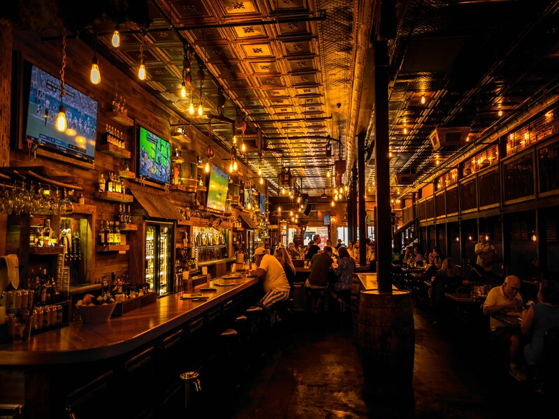

Начало
Как всё начиналось
В 2004 году в Энгелье открылся «Roman`S», это культовый ирландский паб, который стал настоящей легендой Энгельса. Открыв свои двери, он смог сохранить неповторимый колорит и непревзойденный стиль на протяжении двух десятилетий.
За 20 лет паб стал культовым. Здесь отмечают дни рождения, смотрят футбол, встречаются друзья и заводят новые знакомства. Мы сохранили то, с чего начинали — тёплую стойку, честную кухню и отношение к гостю как к другу.
20+Лет в Энгельсе
15 мБарная стойка
20Мест в VIP-зале